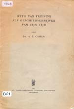
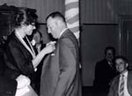
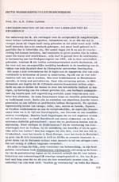
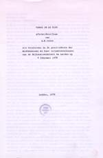
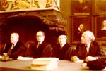
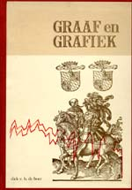
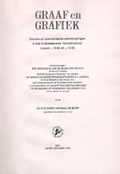
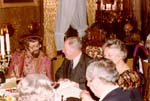

De verandering waargenomen
A.E. Cohen als historicus en universitair bestuurder
Tentoonstelling in de Universiteitsbibliotheek te Leiden, van 28 november 2003 tot en met 4 januari 2004.
Tentoongestelde stukken
8. Hoogleraar middeleeuwse geschiedenis te Leiden
`Dat kan natuurlijk absoluut niet'
R.R. Post, over Cohens benoeming in Leiden
Door het vertrek van F.W.N. Hugenholtz als hoogleraar middeleeuwse geschiedenis naar Utrecht, kwam in Leiden het lectoraat vrij. Dit werd omgezet in een gewoon hoogleraarschap voor de geschiedenis van de Middeleeuwen. B.W. Schaper, hoogleraar algemene geschiedenis, herinnerde zich Cohen nog goed. Hugenholtz was samen met Cohen verbonden aan de School voor Taal- en Letterkunde in Den Haag en daarom vertrouwd met Cohens capaciteiten als docent. De zaak was eigenlijk snel beklonken: op 9 oktober 1959 benoemd, begon Cohen per 1 januari 1960. De hoorcolleges lagen Cohen eigenlijk niet en hij schafte ze na een paar jaar ook af. Hij was meer een Kleinmeister en vond veel meer bevrediging in het werken met kleine groepen studenten. Zo vond hij het strikt noodzakelijk om oorspronkelijke, niet vertaalde, teksten te lezen om de gebruikte terminologie zo goed mogelijk te leren doorgronden. Het afschaffen van de kennis van het Latijn als voorwaarde tot de geschiedenisstudie vond hij dan ook een ramp. Als historicus had hij een voorliefde voor het tijdvak van Erasmus, op welk terrein ook zijn weinig talrijke publicaties liggen. De bestuurlijke taken drongen het hoogleraarschap steeds meer naar de achtergrond en weldra moest H.P.H. Jansen als historicus Cohen gaan vervangen.
|  | 8.1. Otto van Freising als
geschiedschrijver van zijn tijd (Amsterdam : Noord-Hollandsche
Uitgevers Maatschappij, 1960)
¶ Rede uitgesproken bij de aanvaarding van het ambt van gewoon hoogleraar in de geschiedenis der Middeleeuwen en haar hulpwetenschappen aan de Rijksuniversiteit te Leiden op 23 september 1960. |
| 8.2. Aantekeningen voor hoorcollege over
de pest in de Middeleeuwen. [AEC] |
|
|  | 8.3. Cohen onderscheiden als erelid van het Leids Historisch Dispuut Robert Fruin (1962). [AHM] |
|  | 8.4. `Geschiedschrijving op de grens van Middeleeuwen en Renaissance', Handelingen van het Nederlands Filologencongres 35 (1979) 219-230. |
|  | 8.5. Terug in de tijd (Leiden :
[s.n.], 1979)
¶ Afscheidscollege Leiden. |
| 8.6. Cohen spreekt Dick de Boer toe na zijn doctoraal examen, juni 1971. [Groningen, D.E.H. de Boer] | |
|  | 8.7. A.E. Cohen en H.P.H. Jansen als promotor, resp. copromotor bij de promotie van Dick de Boer, november 1978. [D.E.H. de Boer, Groningen] |
|  | 8.8. Graaf en grafiek : sociale en economische ontwikkelingen in het middeleeuwse "Noordholland" tussen ± 1345 en ± 1415 / door Dick Edward Herman de Boer. - Leiden : New Rhine Publishers, 1978. [UBL 2823 B 3] |
|  | |
|  | 8.9. Dick de Boer uitgedost als minstreel/ceremoniemeester bij het afscheid van Cohen als hoogleraar. [D.E.H. de Boer, Groningen] |
|
|
|
| vorige pagina | volgende pagina |